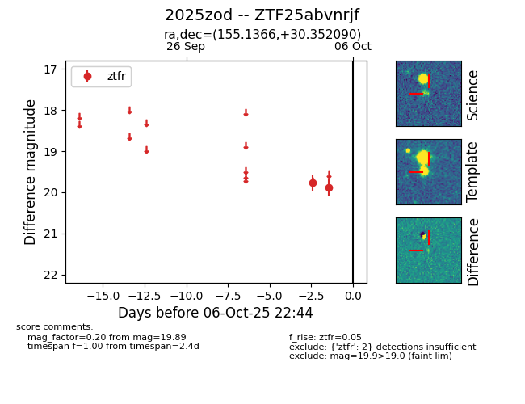

FINK: ZTF25abvnrjf
Lasair: ZTF25abvnrjf
ALeRCE: ZTF25abvnrjf
TNS: 2025zod
YSE: 2025zod
ZTF25abvnrjf (ztf,fink)
2025zod (tns,yse)
equatorial (ra, dec) = (155.1366,+30.35209)
galactic (l, b) = (198.2350,+56.91784)

last ztfr=19.89
2 ztfr detections